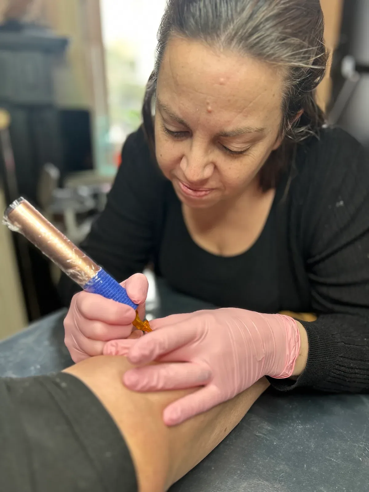
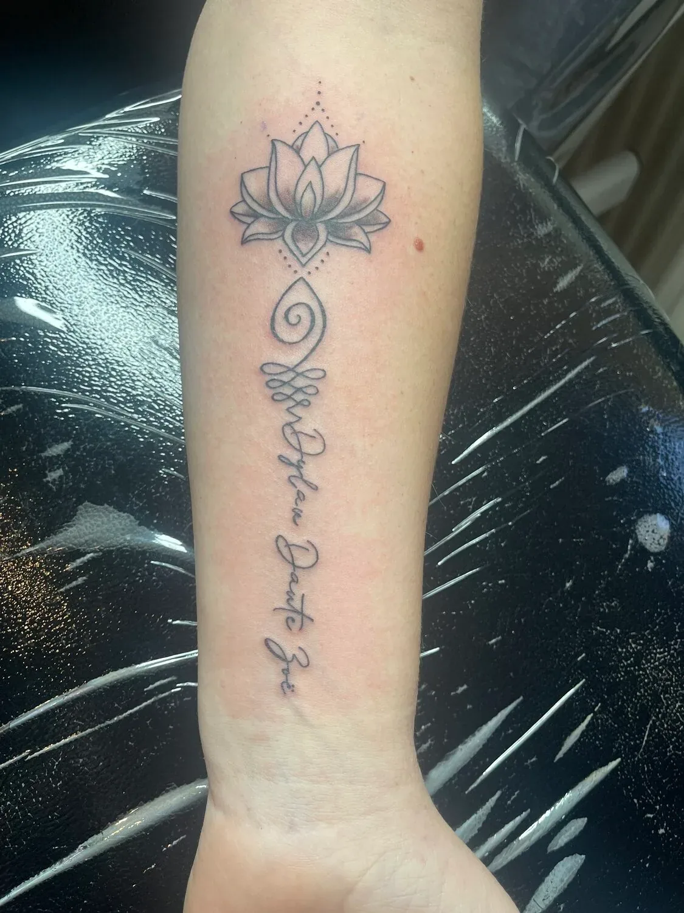
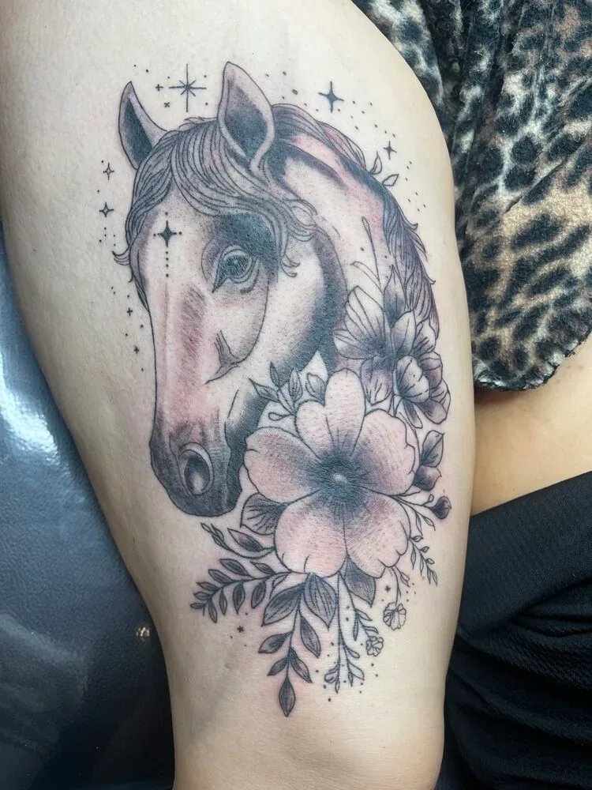
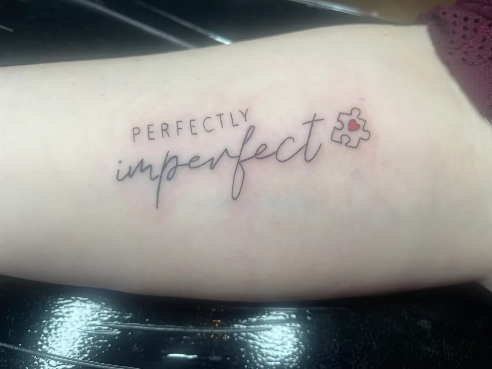
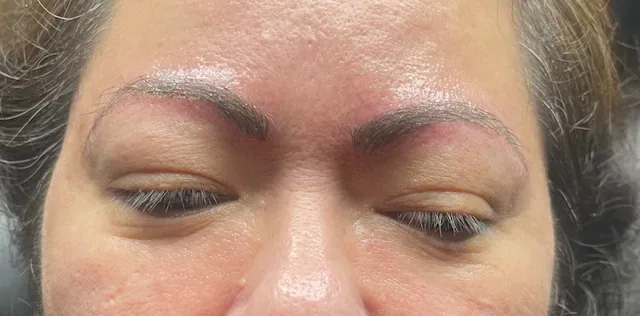
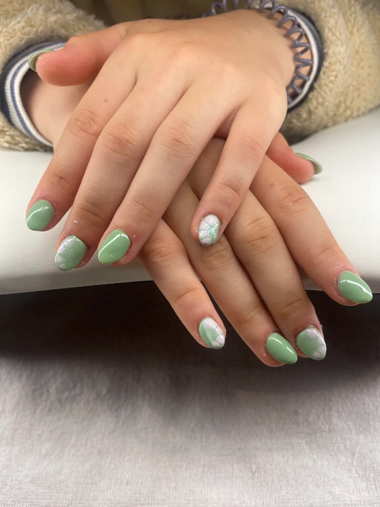
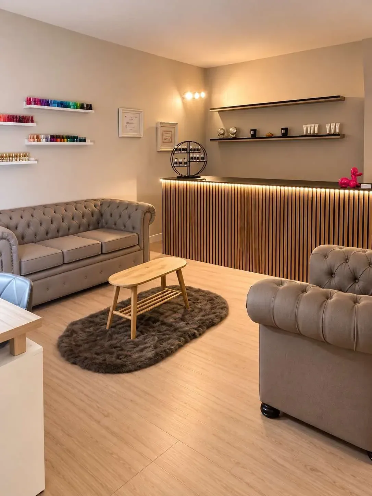
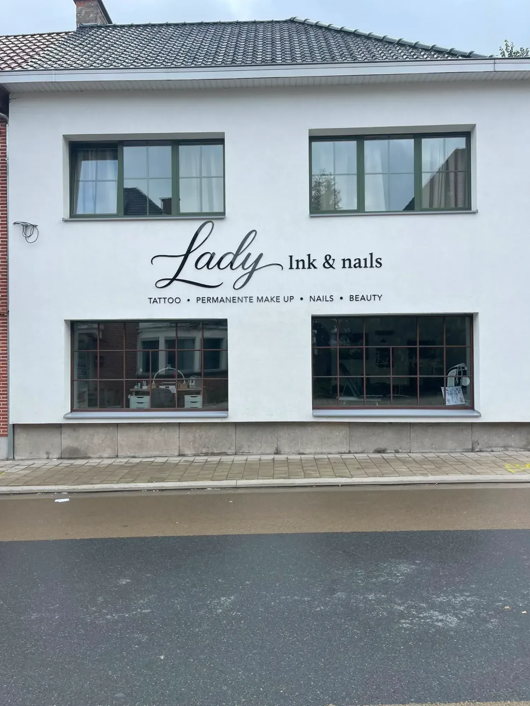

Hoi!Tattoo & beauty bij Aurore
Fijne lijnen, vaste hand.en altijd één op één
Een tattoo, wenkbrauwen die 's ochtends al klaar zijn, verzorgde nagels of een oude tattoo die weg mag. Bij Aurore zit je in een studio die meer weg heeft van een huiskamer.
4,9 op Google uit 269 reviews

TattooPMUNagelsLaser

fine line lotus4,9
269 reviews op Google
Vier vakken, één paar handen.
Aurore begon in de beauty. Daarna kwamen de nagels, de permanente make-up en de tattoos. Die precisie zie je in alles terug.




Spijt?
Een oude tattoo die niet meer bij je past, laat Aurore met de laser vervagen of verdwijnen.
Vraag het eerlijk na4,9
Gemiddeld uit 269 reviews op Google
Je komt binnen als klant, je gaat buiten met een babbel.

"Ik kom hier al een paar jaar voor mijn tattoos en mijn nagels. Nooit kan ik er iets negatiefs over zeggen."
"Joviale ontvangst, rustige sfeer, werkt geconcentreerd met het gewenste resultaat. Was eerste tattoo en ben er zeer tevreden mee."
"Zeer mooi resultaat, Aurore is een vriendelijke en sociale dame. Stemt je op je gemak! Zeker een aanrader!!"
Meer dan 20 jaar in de beautyMeer dan 10 jaar tattoo artistNederlands, Frans of Engels
Zin in iets nieuws? Laat het Aurore weten.
Stuur kort wat je in gedachten hebt, een foto of schets erbij helpt altijd. Afspraken kunnen ook 's avonds, en op zondagnamiddag.
StudioBroeder de Saedeleerstraat 29, 9340 LedePlan je route
WanneerOp afspraak, ook 's avonds tot 22u
